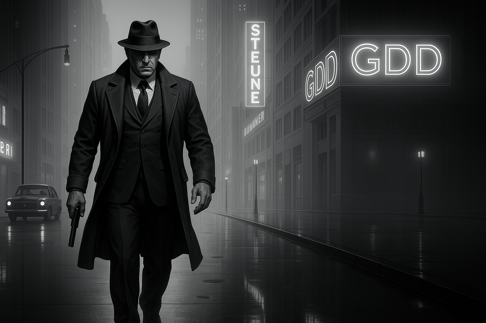
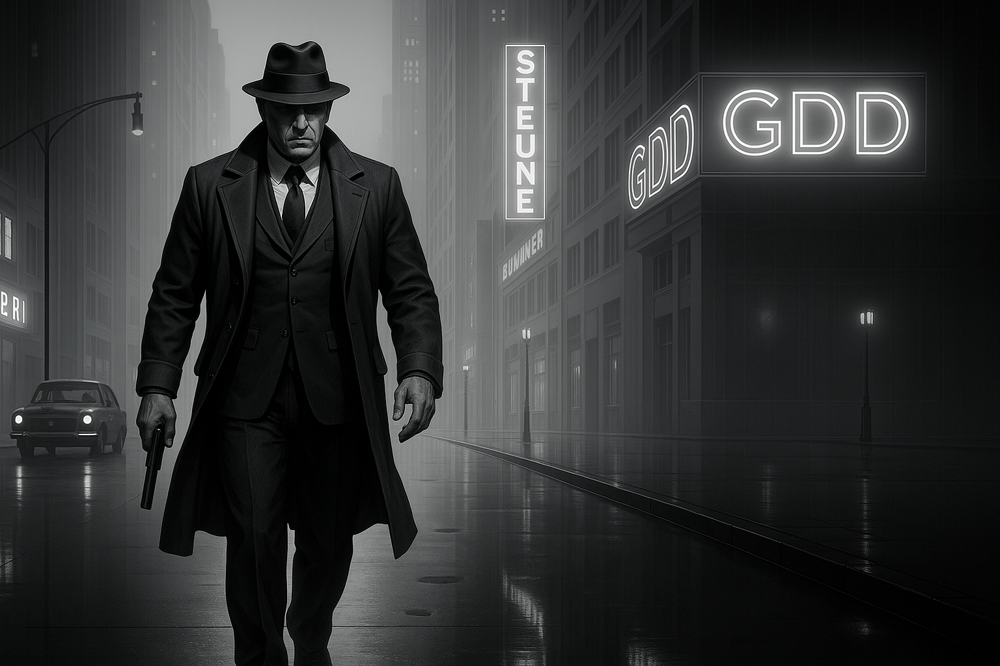

Game Design Document
Life-Time

 

Storyline
Ao despertar, Silas Vael se vê preso em um presente infinito, possivelmente em um momento entre 23h59 e meia-noite. É como se o tempo estivesse congelado, e apenas ele fosse capaz de se mover. Nesse instante, ele consegue ver as almas das pessoas vagando ao seu redor, pois a alma é eterna — e o "presente infinito" representa justamente essa eternidade.
No entanto, assim como a alma é eterna, o inferno também o é. E da mesma forma que todos enfrentam batalhas espirituais, Silas Vael também precisará enfrentá-las — mas, em seu caso, de forma literal.
Essas batalhas espirituais se manifestam como confrontos contra os desejos do corpo — vícios, prazeres vazios e outros malefícios — e contra os conflitos da razão.
A partir desse ponto, Silas Vael precisa enfrentar demônios que tentam arrastar sua alma para o inferno. Ele terá que encontrar uma maneira de escapar desse presente eterno e impedir que sua alma seja condenada.
Gênero
Suspense narrativo, First-Person Shooter (FPS), com elementos de ação e temática espiritual.
Elementos presentes no jogo
Armas variadas, cada uma com mecânicas exclusivas. Possibilidade de upgrades tanto para as armas quanto para a barra de vida. Além dos inimigos o cenário também apresenta diversos obstáculos que desafiam a progressão do jogador.
Estratégia de retenção
Está relacionada à dificuldade progressiva, às mecânicas de upgrade, e aos sistemas de recordes de tempo e pontuação.
Público Alvo
Jovens e adultos interessados em narrativas psicológicas, espirituais e existenciais.
Personagem Principal

Silas Vael: É apenas mais um entre os becos úmidos da cidade, chapéu baixo e alma em pedaços. Trabalha à noite, dorme de dia, e no meio tempo vive entre goles de whisky e os ecos do blues rasgando a madrugada, como se cada nota carregasse um pedaço do seu passado. Dizem que todos carregam um inferno no bolso, o de Silas começou quando uma mulher se jogou do oitavo andar, caindo diante de seus pés. Os olhos saltados dela ainda o perseguem nas ruas sujas da cidade. Quando o tempo parou naquela noite maldita, às 23h59, o relógio que ele jurava ter quebrado voltou a funcionar, como uma ironia sádica do destino. Agora ele anda entre os mortos, com a alma despedaçada e em busca da promessa de purgação, armado até os dentes e com o diabo soprando em seu ouvido — no fundo, ainda é só um homem cansado procurando um cigarro e um lugar onde repousar.
Personagens Secundários

Brother Ray: Surgiu em uma noite chuvosa, com seu sobretudo puído, arrastando uma mala, dentro dela armas tilintavam em meio a garrafas de whisky e charutos. Em vida, Ray foi músico, tocava guitarra em clubes esfumaçados até que numa madrugada, entre os acordes, alguém disparou contra a banda e a plateia. Desde então, ele vende armas no submundo, com um tapa olho e uma fala mansa de arrepiar. “Cada arma tem um som”, ele costuma dizer, “e cada som afeta a alma da sua própria maneira”. Brother Ray conhece cada fantasma daquelas bandas, portanto, ele sabe reconhecer quando almas ainda vivas encontram o presente infinito, no entanto ele não faz distinções, negócios são negócios.

Inimigos

Nicrantes: De pele amarelada que lembra dentes mal-cuidados, os Nicrantes são demônios do vício. Seus corpos são deformados, magros demais e com veias saltadas. Caminham em passos trôpegos, porém com certa agilidade, como alguém que dança bêbado. Suas vestes remetem a artistas de rua, e suas armas são objetos que remetem a algum vício em drogas ou álcool, essa aparência é um reflexo daqueles que foram corrompidos por eles ao longo de gerações. Em resumo, eles são o vício encarnado, predadores que caçam calor humano só para tentar sentir como é estar vivo. Você os ouve antes de ver — tosses secas, garrafas tilintando e aquele sussurro rouco dizendo que só mais uma dose não vai matar.


Cenários
Temática: Presente infinito, simbolizando a eternidade da alma.
Inspiração Visual: Ambientes urbanos decadentes, estilo noir, chuva constante, sombras pesadas e luzes de neon.
Elementos: Relógios parados, ruas escuras, almas vagando, espaços claustrofóbicos e melancólicos.
Mecânicas Implementadas
Combate em primeira pessoa com armas de diferentes mecânicas, sistema de upgrades para armas e barra de vida, obstáculos ambientais, progressão baseada em purgação espiritual e confrontos com demônios.
Interfaces e UHD
Menus minimalistas com detalhes em preto e cinza. HUD simbólico e imersivo, alinhado à estética espiritual e decadente do jogo.